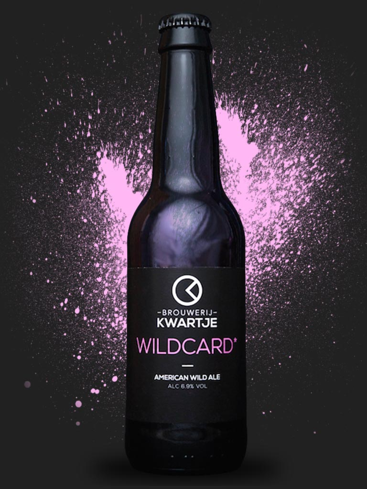

Wildcard
American Wild Ale
bitter
fruitig
Deze American wild Ale heeft een goede hop smaak en een zachte dronk door de honing die er in het brouwproces in is gegaan. Een heerlijk biertje voor elke gelegenheid.
Te koop bij: